Полная программа обучения тату-мастеров с нуля до постоянных клиентов
Полное содержание и план всех 15 блоков курса - от первого включения машинки до именного диплома. Автор - Виктория Поникарова, основательница студии Sarna Tattoo, ментор 300+ выпускников в 12 студиях-партнёрах по Украине и Европе.
15практических блоков
40+часов практики и видео
18разобранных стилей тату
12студий-партнёров
Виктория Поникарова · ViP tattoo school
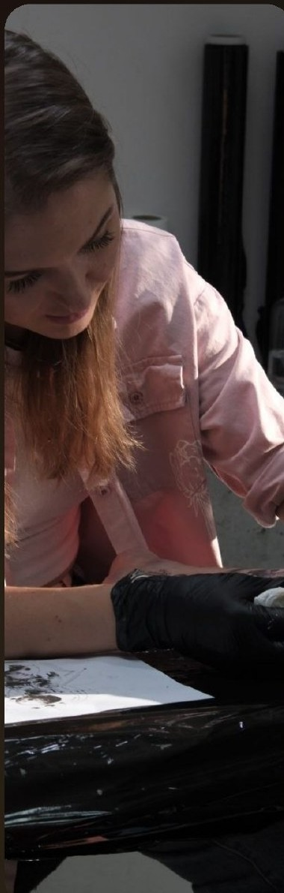
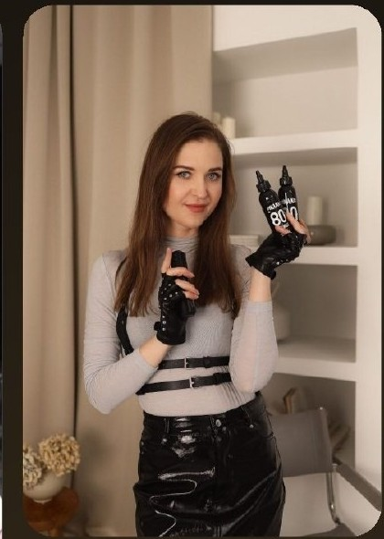
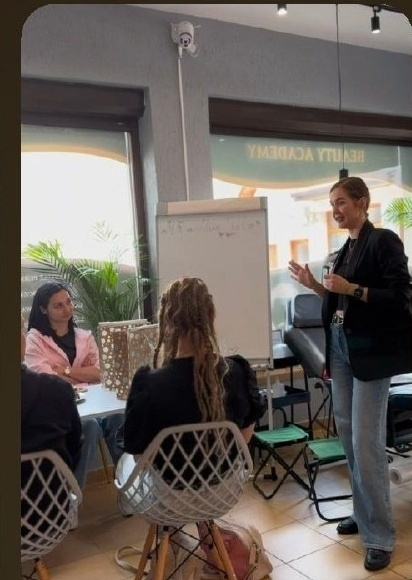
1/23
Структура курса
15 блоков, из которых состоит курс
01VIP tattoo school
02AI-assistant
03Безопасность
04Материалы
05Организация + место
06Практика
07Работа с кожей
08Трафареты
09Pro Stories®
1030-дн. практикум
11Стили
12Работа с клиентом
13Реклама
14Zoom - Tattoo
15Именной диплом
2/23
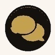
Формат поддержки
Как я поддерживаю тебя на протяжении всего курса:
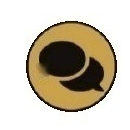
Личная обратная связь
Виктория лично отвечает и разбирает домашние задания
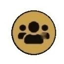
Чат сообщества
Общение и поддержка с другими тату-мастерами
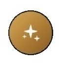
AI-ассистент 24/7
Персональный помощник на данных курса и студии Sarna
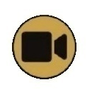
Живые Zoom-созвоны
Разбор твоего кабинета, цен и клиентов вживую (блоки 13-14)
«Ты никогда не остаёшься один на один с вопросами - я на связи весь путь»
3/23
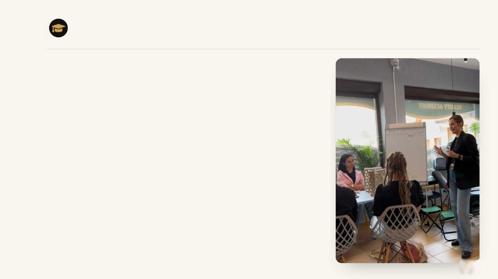
01
Точка старта: от выбора пути до первого фото в портфолио.
4/23
VIP tattoo school - Вступление
- Приветственное видео-кружочек от Виктории - личное неформальное знакомство
- Видео-урок 1: как войти в тату-индустрию, независимый мастер vs студия
- Видео-урок 2: честная картина профессии - доходы, расходы, путь от Procreate и искусственной кожи до настоящей
- Видео-урок 3: портфолио и продвижение - свет, фильтры, монтаж в CapCut
- Чек-лист инструментов для съёмки (кольцевая лампа, фильтры, Lightroom/Snapseed)
- Базовое ценообразование, безопасность и этика на старте
- Домашнее задание с личным разбором первого фото от Виктории
VIP tattoo school - Вступление
Точка старта: от выбора пути до первого фото в портфолио.
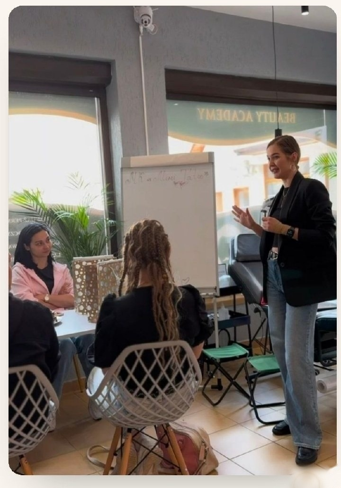
- Приветственное видео-кружочек от Виктории - личное неформальное знакомство
- Видео-урок 1: как войти в тату-индустрию, независимый мастер vs студия
- Видео-урок 2: честная картина профессии - доходы, расходы, путь от Procreate и искусственной кожи до настоящей
- Видео-урок 3: портфолио и продвижение - свет, фильтры, монтаж в CapCut
- Чек-лист инструментов для съёмки (кольцевая лампа, фильтры, Lightroom/Snapseed)
- Базовое ценообразование, безопасность и этика на старте
- Домашнее задание с личным разбором первого фото от Виктории
4/23
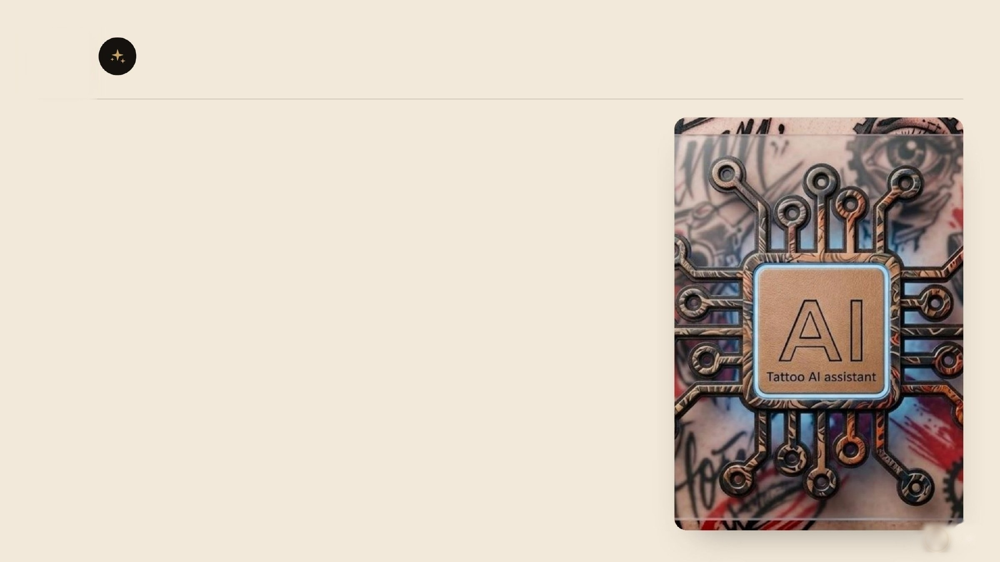
02
Персональный AI-ассистент - бонус, включённый в обучение бесплатно и бессрочно.
5/23
AI-assistant
- Кастомный GPT-ассистент на данных курса и студии Sarna
- Ветка для новичков: план обучения, база, упражнения на линию и контур
- Ветка для практикующих: разбор портфолио, идеи контента, рост цен
- Советы, как получать максимально точные ответы от ассистента
- Готовые примеры вопросов для копирования - для новичков и мастеров
- FAQ: что ассистент может и не может (не заменяет живого мастера)
AI-assistant
Персональный AI-ассистент - бонус, включённый в обучение бесплатно и бессрочно.
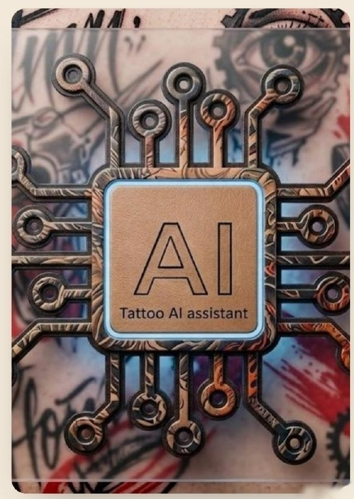
- Кастомный GPT-ассистент на данных курса и студии Sarna
- Ветка для новичков: план обучения, база, упражнения на линию и контур
- Ветка для практикующих: разбор портфолио, идеи контента, рост цен
- Советы, как получать максимально точные ответы от ассистента
- Готовые примеры вопросов для копирования - для новичков и мастеров
- FAQ: что ассистент может и не может (не заменяет живого мастера)
5/23
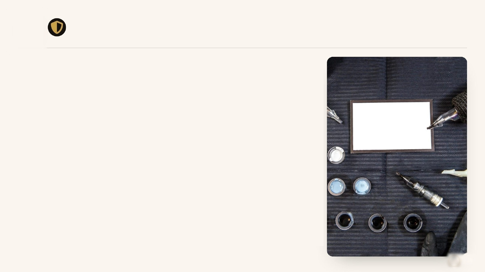
03
Один из ключевых блоков - фундамент профессионализма мастера.
6/23
Безопасность
- Карта боли и полный список противопоказаний клиента (8 категорий)
- Готовый шаблон анкеты-согласия - забираешь и сразу используешь
- Видео-урок по гигиене: перчатки, маски, золотое правило рук
- Стерилизация оборудования: автоклав, спор-тесты, утилизация игл
- Дезинфекция поверхностей и барьерная плёнка на сеанс
- Уход за тату по дням + когда клиенту нужен врач
- Риски мастера (гепатит B/C, ВИЧ) и вакцинация
- Пошаговый протокол действий при уколе использованной иглой
Безопасность
Один из ключевых блоков - фундамент профессионализма мастера.
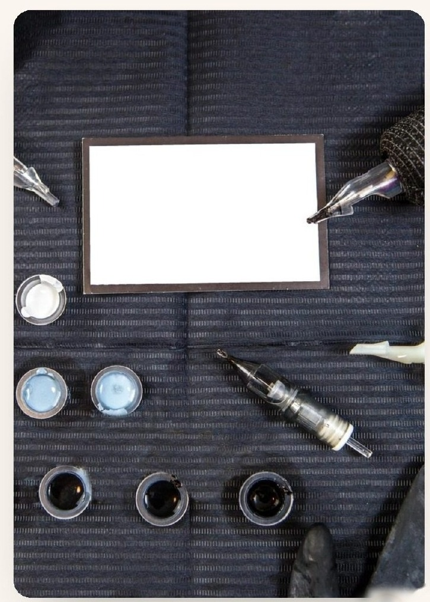
- Карта боли и полный список противопоказаний клиента (8 категорий)
- Готовый шаблон анкеты-согласия - забираешь и сразу используешь
- Видео-урок по гигиене: перчатки, маски, золотое правило рук
- Стерилизация оборудования: автоклав, спор-тесты, утилизация игл
- Дезинфекция поверхностей и барьерная плёнка на сеанс
- Уход за тату по дням + когда клиенту нужен врач
- Риски мастера (гепатит B/C, ВИЧ) и вакцинация
- Пошаговый протокол действий при уколе использованной иглой
6/23
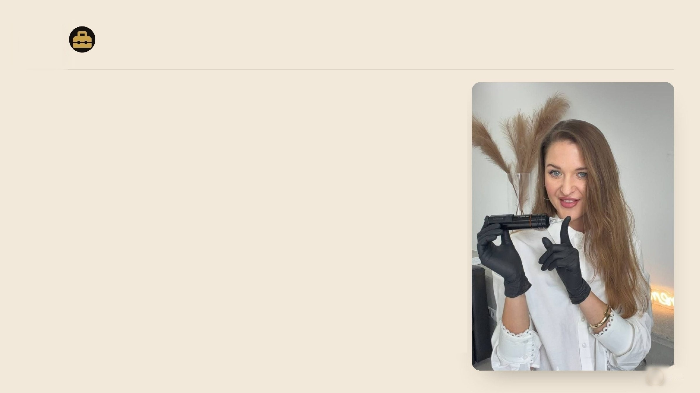
04
Полная техническая база оборудования и расходников.
7/23
Материалы
- Индукционные vs роторные машинки: устройство, плюсы и минусы
- Виды картриджей RS / RM / RL / M1 - форма, назначение, применение
- Заточка игл (taper): Medium / Long / Extra Long и на что влияет
- Диаметр и маркировка игл 08-14 с расшифровкой на примерах
- Стандарт REACH - какие пигменты разрешены в ЕС
- Полный чек-лист материалов на сеанс по 6 категориям
- Видео-обзор реальных материалов и брендов Виктории
Материалы
Полная техническая база оборудования и расходников.
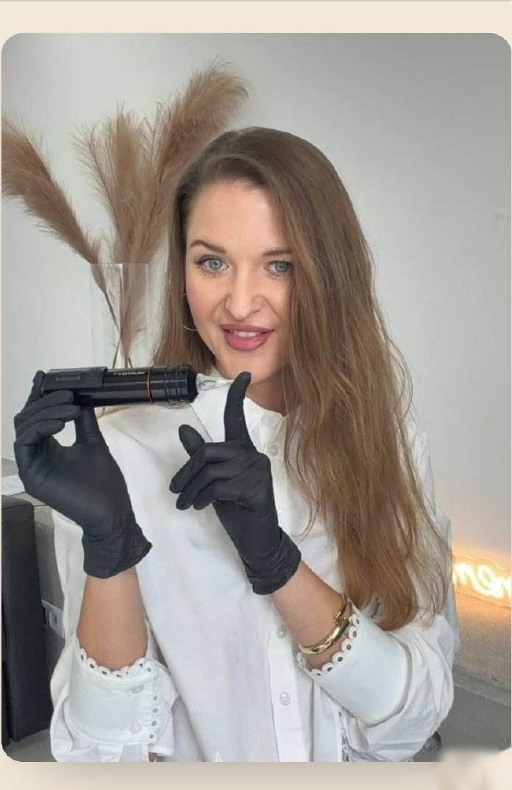
- Индукционные vs роторные машинки: устройство, плюсы и минусы
- Виды картриджей RS / RM / RL / M1 - форма, назначение, применение
- Заточка игл (taper): Medium / Long / Extra Long и на что влияет
- Диаметр и маркировка игл 08-14 с расшифровкой на примерах
- Стандарт REACH - какие пигменты разрешены в ЕС
- Полный чек-лист материалов на сеанс по 6 категориям
- Видео-обзор реальных материалов и брендов Виктории
7/23
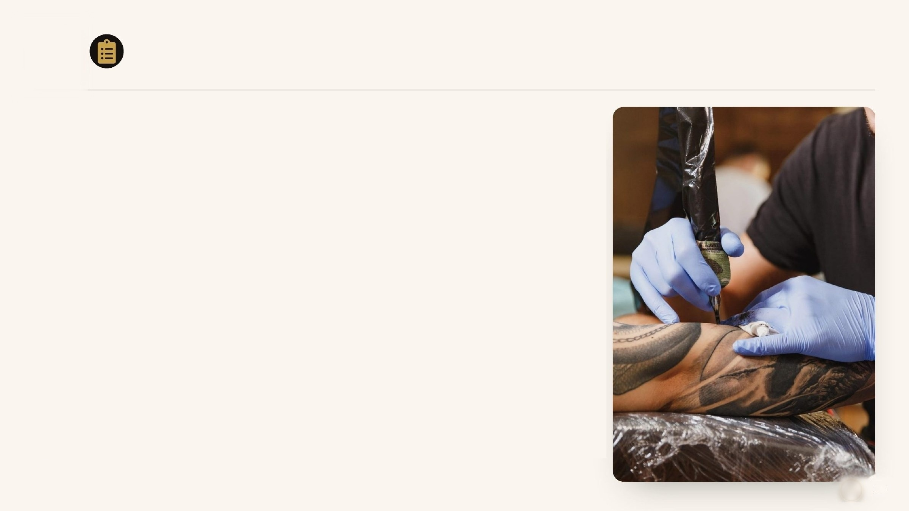
05
От пустого стола до готовой к приёму клиента студии.
8/23
Организация + рабочее место
- Принципы организации рабочего пространства для чистоты и скорости
- Полный видео-урок сборки рабочего места шаг за шагом
- Два способа защиты спрей-батла и машинки барьерной плёнкой
- Как правильно принимать клиента с первых минут
- Советы по проводному оборудованию и технике безопасности
- Аудит рабочего места и учёт расходников для практикующих
- Чек-лист «перед приходом клиента»
Организация + рабочее место
От пустого стола до готовой к приёму клиента студии.
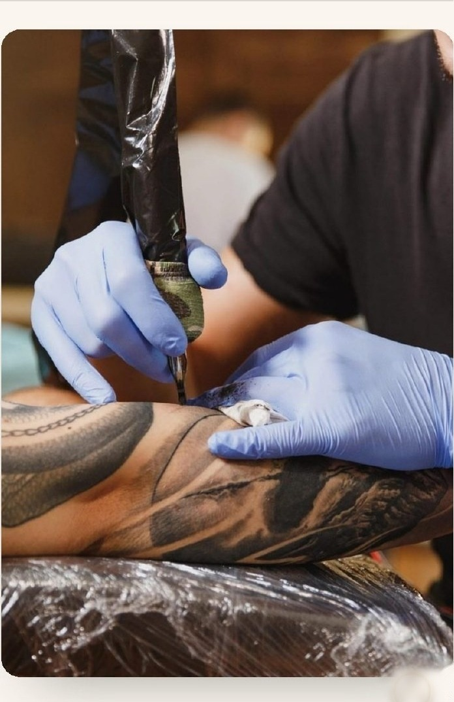
- Принципы организации рабочего пространства для чистоты и скорости
- Полный видео-урок сборки рабочего места шаг за шагом
- Два способа защиты спрей-батла и машинки барьерной плёнкой
- Как правильно принимать клиента с первых минут
- Советы по проводному оборудованию и технике безопасности
- Аудит рабочего места и учёт расходников для практикующих
- Чек-лист «перед приходом клиента»
8/23
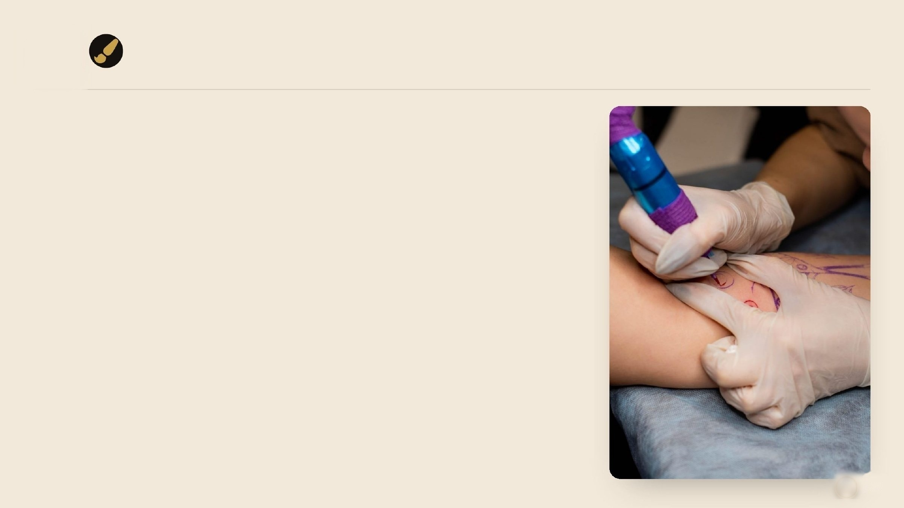
06
Самый объёмный блок курса - 7 полных видео-уроков.
9/23
Практика
- Создание авторского эскиза в Procreate с нуля (из референсов Pinterest)
- Основы Procreate: кисти, слои, инструмент симметрии
- Демонстрация глубины иглы на апельсиновой корке - «подплывы»
- Подготовка кожи клиента и перенос кальки без разводов
- Первая практика на искусственной коже (татуировка-бабочка)
- Продвинутая практика: сочетание игл, техника dotwork
- Полный настоящий сеанс на клиенте - от эскиза до фото в портфолио
- Статья «8 правил практики», которая экономит часы ошибок
Практика
Самый объёмный блок курса - 7 полных видео-уроков.
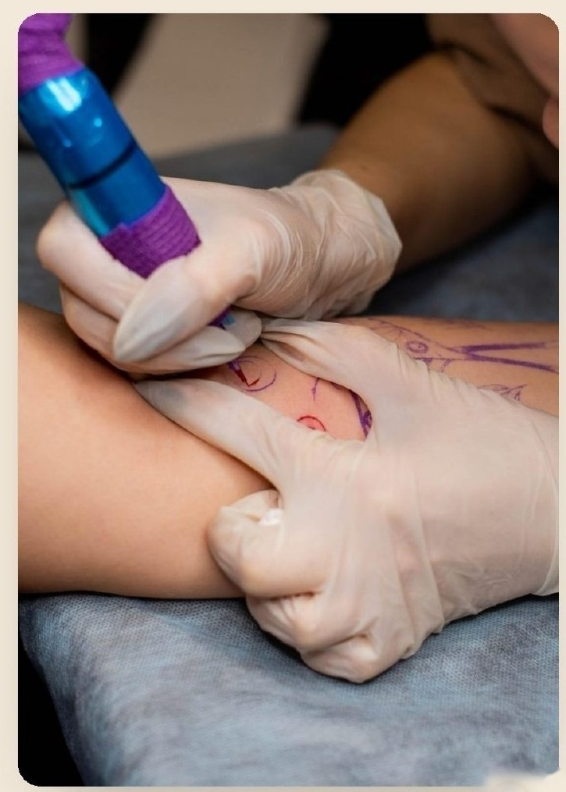
- Создание авторского эскиза в Procreate с нуля (из референсов Pinterest)
- Основы Procreate: кисти, слои, инструмент симметрии
- Демонстрация глубины иглы на апельсиновой корке - «подплывы»
- Подготовка кожи клиента и перенос кальки без разводов
- Первая практика на искусственной коже (татуировка-бабочка)
- Продвинутая практика: сочетание игл, техника dotwork
- Полный настоящий сеанс на клиенте - от эскиза до фото в портфолио
- Статья «8 правил практики», которая экономит часы ошибок
9/23
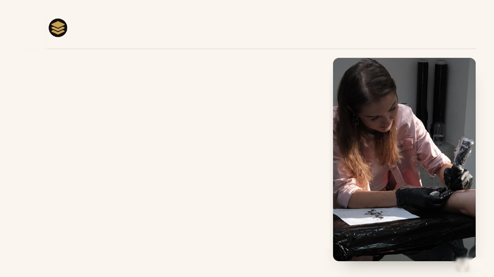
07
Глубоко технический блок про самый главный «холст» мастера.
10/23
Работа с кожей
- Глубина иглы и структура кожи: эпидермис, дерма, гиподерма
- Факторы, влияющие на глубину: тип кожи, игла, зона тела
- Глубина для разных техник - контур, тени, плотная заливка
- 7 сложных зон тела: рёбра, живот, бёдра, локти, стопы и другие
- Работа с рубцовой тканью - когда можно татуировать поверх шрама
- Работа с растяжками и дизайн, который их маскирует
- Уход за тату и гарантия бесплатной коррекции
Работа с кожей
Глубоко технический блок про самый главный «холст» мастера.
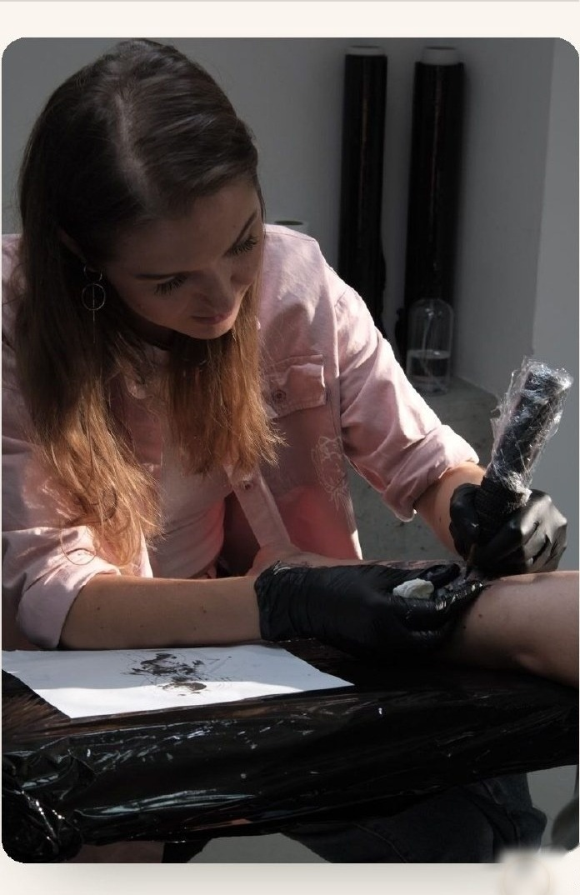
- Глубина иглы и структура кожи: эпидермис, дерма, гиподерма
- Факторы, влияющие на глубину: тип кожи, игла, зона тела
- Глубина для разных техник - контур, тени, плотная заливка
- 7 сложных зон тела: рёбра, живот, бёдра, локти, стопы и другие
- Работа с рубцовой тканью - когда можно татуировать поверх шрама
- Работа с растяжками и дизайн, который их маскирует
- Уход за тату и гарантия бесплатной коррекции
10/23
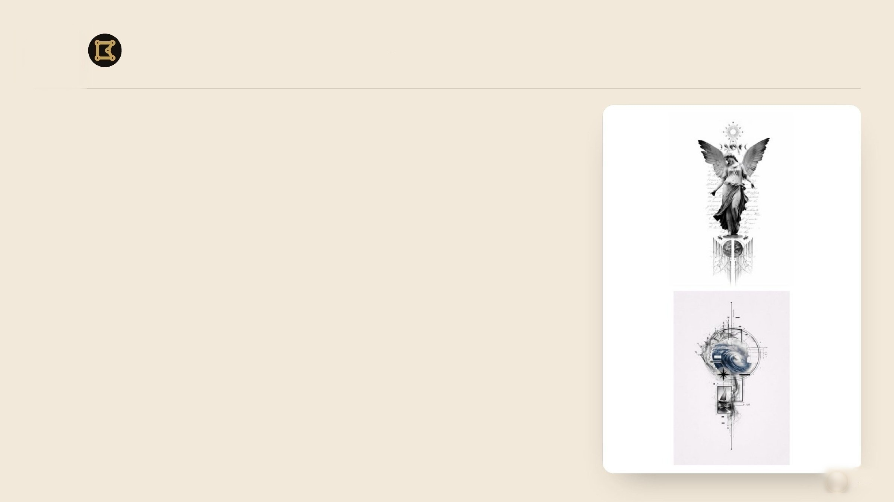
08
8 листов-прописей - путь к твёрдой и уверенной руке.
11/23
Трафареты
- Листы 1-2: прямые линии, кривые, волны и зигзаги
- Листы 3-4: пунктир, ритм, простые фигуры по контуру
- Лист 5: геометрия и многоугольники
- Листы 6-7: объём - шар и куб со светотенью, 3 техники растушёвки
- Лист 8: тоновая шкала - растяжка серого на 10 ступеней
- Урок «Как исправить плохой трафарет»: ошибки и деформации
- Техника микронадрезов трафарета для работы на изгибах тела
Трафареты
8 листов-прописей - путь к твёрдой и уверенной руке.
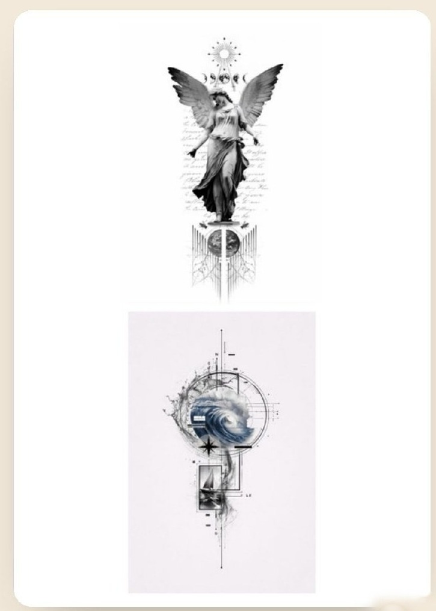
- Листы 1-2: прямые линии, кривые, волны и зигзаги
- Листы 3-4: пунктир, ритм, простые фигуры по контуру
- Лист 5: геометрия и многоугольники
- Листы 6-7: объём - шар и куб со светотенью, 3 техники растушёвки
- Лист 8: тоновая шкала - растяжка серого на 10 ступеней
- Урок «Как исправить плохой трафарет»: ошибки и деформации
- Техника микронадрезов трафарета для работы на изгибах тела
11/23
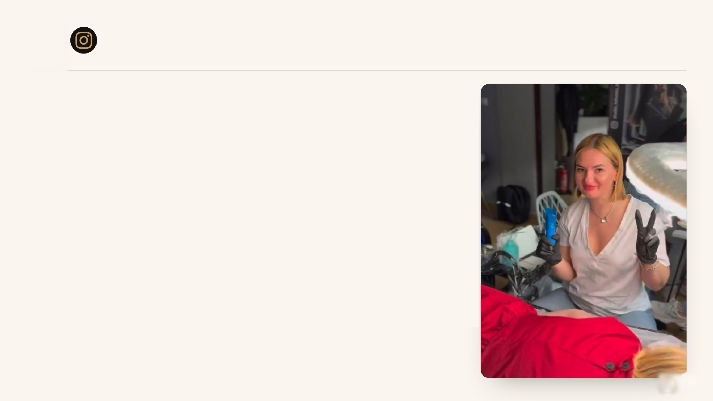
09
Готовый пошаговый контент-план на 31 день для Instagram.
12/23
Pro Stories®
- Дни 1-3: личный бренд, «мой путь», знакомство с аудиторией
- Дни 4-5: прогревы и техника закрытых продаж со скидками
- Дни 8-17: продающие сторис - 2 призыва к действию в каждой
- Дни 18-28: экспертный контент, работа с болями аудитории
- Дни 29-31: финальные продажи, кейсы, подведение итогов
- Каждый день - конкретная тема и готовая инструкция
Pro Stories®
Готовый пошаговый контент-план на 31 день для Instagram.
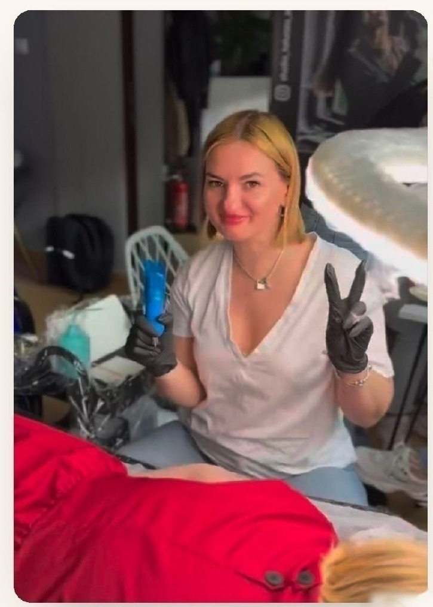
- Дни 1-3: личный бренд, «мой путь», знакомство с аудиторией
- Дни 4-5: прогревы и техника закрытых продаж со скидками
- Дни 8-17: продающие сторис - 2 призыва к действию в каждой
- Дни 18-28: экспертный контент, работа с болями аудитории
- Дни 29-31: финальные продажи, кейсы, подведение итогов
- Каждый день - конкретная тема и готовая инструкция
12/23
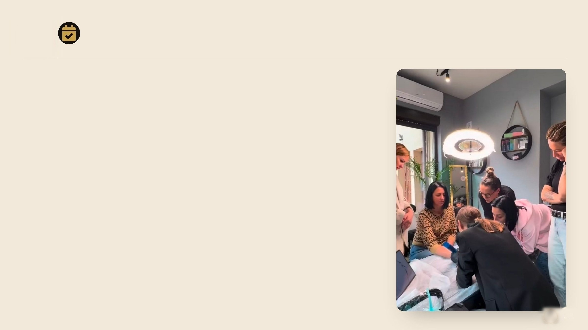
10
Прокачка продаж и уверенности - 30+1 бонусный день.
13/23
30-дневный практикум
- Пре-старт: бонус-видео по акциям и скидкам + подкаст-саммари
- Дни 1-5: точка А, экспертность без обесценивания, боли аудитории
- Дни 6-14: роль в продажах, аудит профиля, триггерные сообщения
- Дни 15-24: микро-победы, профессиональные границы, возражения
- Дни 25-31: чёткое предложение, воронка записи, систематизация
- Регулярная обратная связь и мотивационные видео на всём пути
30-дневный практикум
Прокачка продаж и уверенности - 30+1 бонусный день.
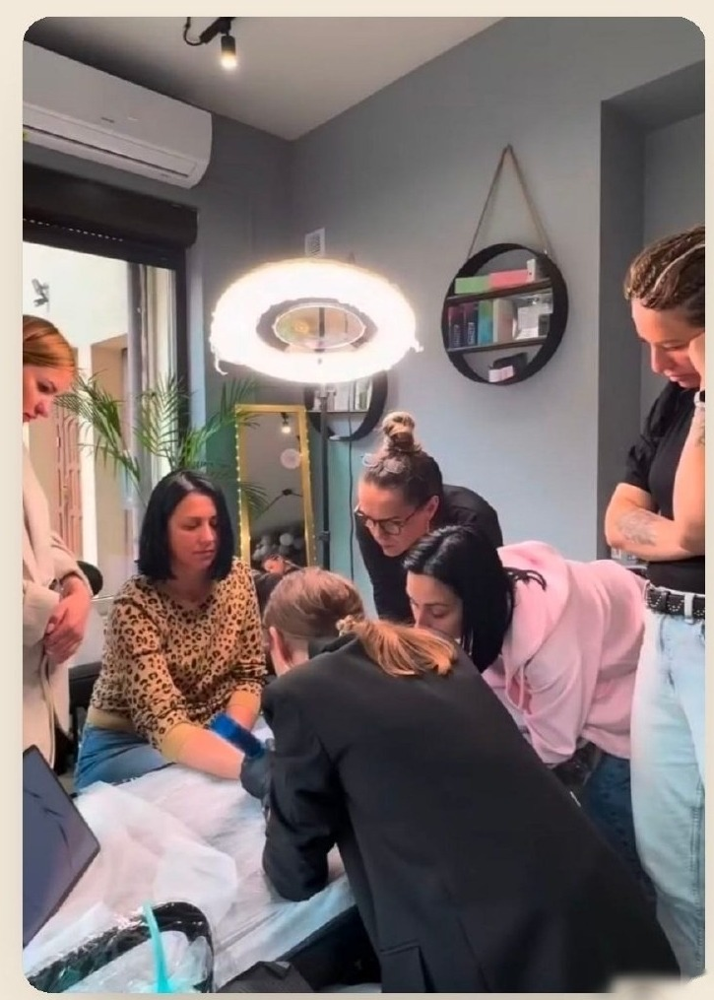
- Пре-старт: бонус-видео по акциям и скидкам + подкаст-саммари
- Дни 1-5: точка А, экспертность без обесценивания, боли аудитории
- Дни 6-14: роль в продажах, аудит профиля, триггерные сообщения
- Дни 15-24: микро-победы, профессиональные границы, возражения
- Дни 25-31: чёткое предложение, воронка записи, систематизация
- Регулярная обратная связь и мотивационные видео на всём пути
13/23
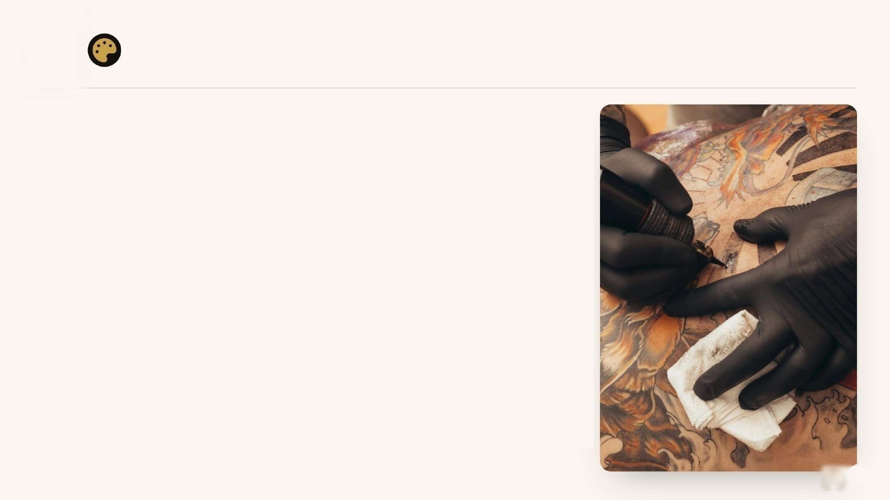
11
Полная теоретическая карта - 18 стилей с фото-примерами.
14/23
Стили
- Реализм, чикано, акварель - сложные тоновые и цветные техники
- Графика, лайнворк, минимализм, файнлайн, гравюра - чистая линия
- Олд скул, нью скул, нео традишнл - классика и её эволюция
- Дотворк, геометрия, tribal cyber - точки, симметрия, тренд
- Японский стиль, полинезия, скандинавский - символика и традиция
- Треш полька, концепт тату - авторские и коллажные техники
- По каждому - характеристики, преимущества и сложности для мастера
Стили
Полная теоретическая карта - 18 стилей с фото-примерами.
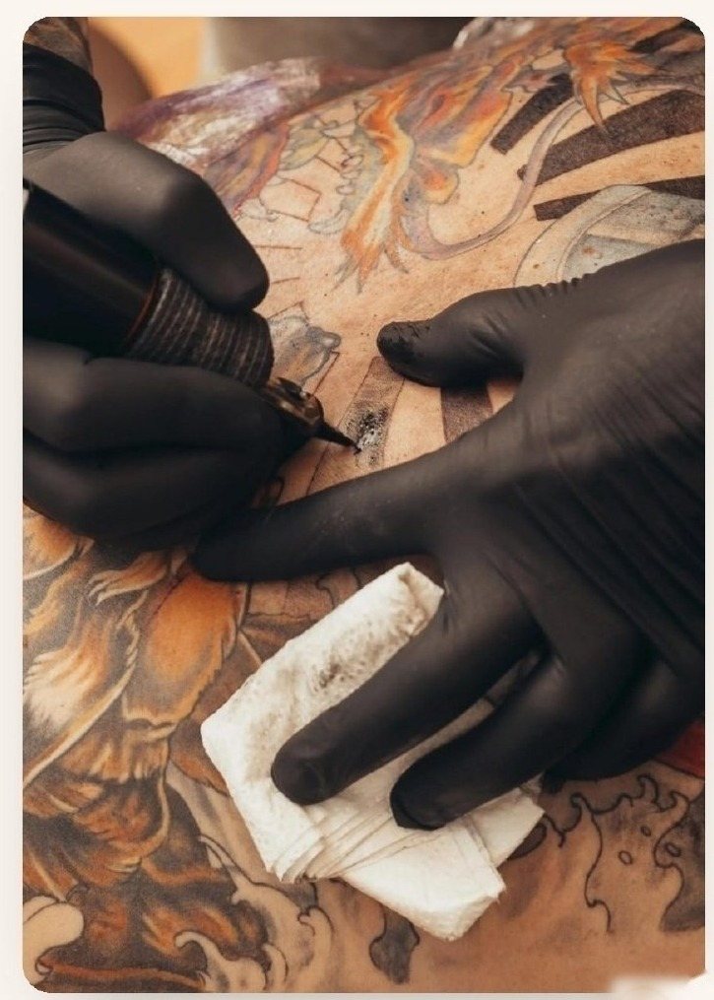
- Реализм, чикано, акварель - сложные тоновые и цветные техники
- Графика, лайнворк, минимализм, файнлайн, гравюра - чистая линия
- Олд скул, нью скул, нео традишнл - классика и её эволюция
- Дотворк, геометрия, tribal cyber - точки, симметрия, тренд
- Японский стиль, полинезия, скандинавский - символика и традиция
- Треш полька, концепт тату - авторские и коллажные техники
- По каждому - характеристики, преимущества и сложности для мастера
14/23
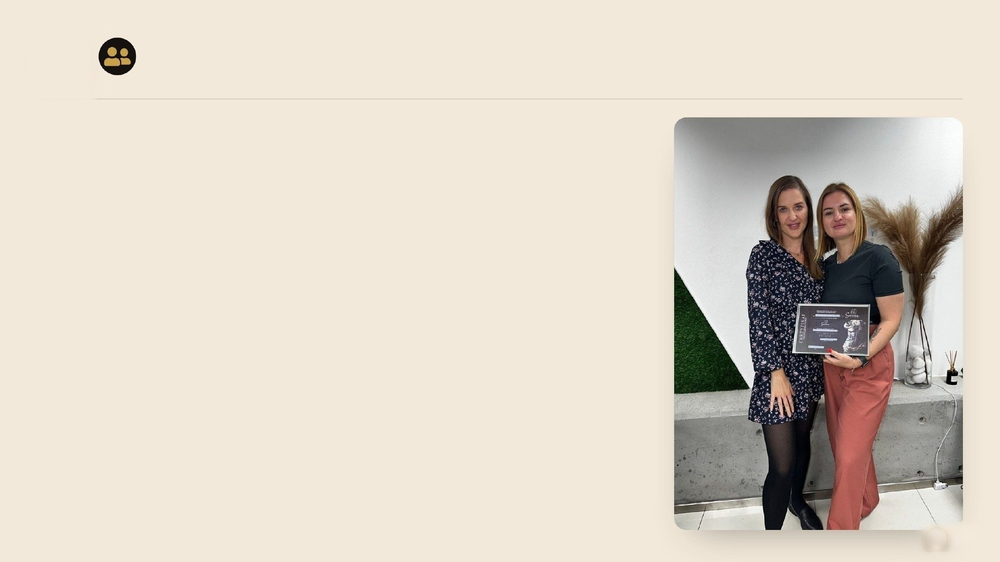
12
От первого сообщения до зажившейся татуировки.
15/23
Работа с клиентом
- Первая коммуникация: что уточнять у клиента с первого сообщения
- Консультация и создание эскиза под тело конкретного клиента
- Подготовка клиента к сеансу - чек-лист из 8 пунктов
- Готовый шаблон анкеты-согласия (тот же, что в Блоке 3)
- Шаблон «График записи клиентов» на 12 месяцев в Excel
- Инструкция по уходу за тату - что выдавать каждому клиенту
- Долгосрочные отношения: follow-up после сеанса, история клиента
Работа с клиентом
От первого сообщения до зажившейся татуировки.
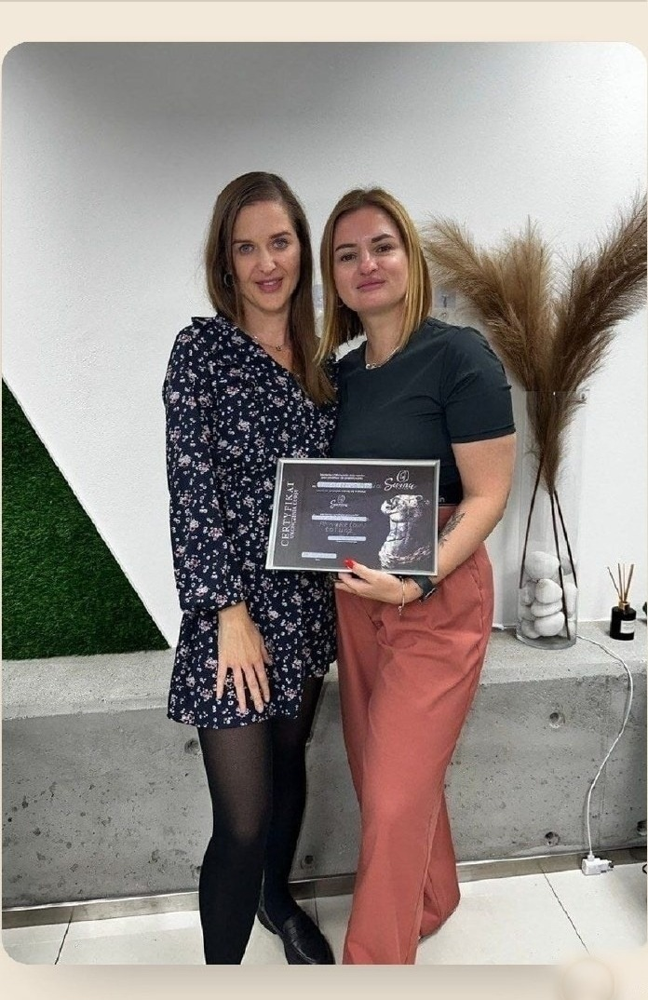
- Первая коммуникация: что уточнять у клиента с первого сообщения
- Консультация и создание эскиза под тело конкретного клиента
- Подготовка клиента к сеансу - чек-лист из 8 пунктов
- Готовый шаблон анкеты-согласия (тот же, что в Блоке 3)
- Шаблон «График записи клиентов» на 12 месяцев в Excel
- Инструкция по уходу за тату - что выдавать каждому клиенту
- Долгосрочные отношения: follow-up после сеанса, история клиента
15/23
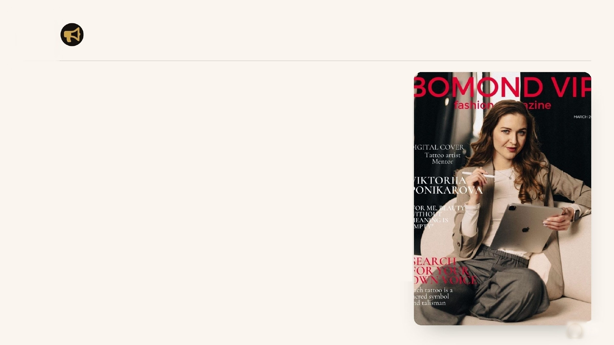
13
Живые Zoom-созвоны в маленьких группах (1-3 человека).
16/23
Реклама Meta / Google / TikTok
- Meta Ads: геотаргетинг, аудитории, бюджет для старта, креативы
- Google Ads: горячий спрос, стоимость клика, Google Business Profile
- TikTok Ads: контент-стратегия, аутентичность, бюджет для теста
- Лендинг под рекламу: обязательные элементы и мобильная скорость
- Таргетинг и аудитории: look-alike, ретаргетинг, локальный охват
- Аудит рекламного кабинета: структура, геотаргетинг, Quality Score
Реклама Meta / Google / TikTok
Живые Zoom-созвоны в маленьких группах (1-3 человека).
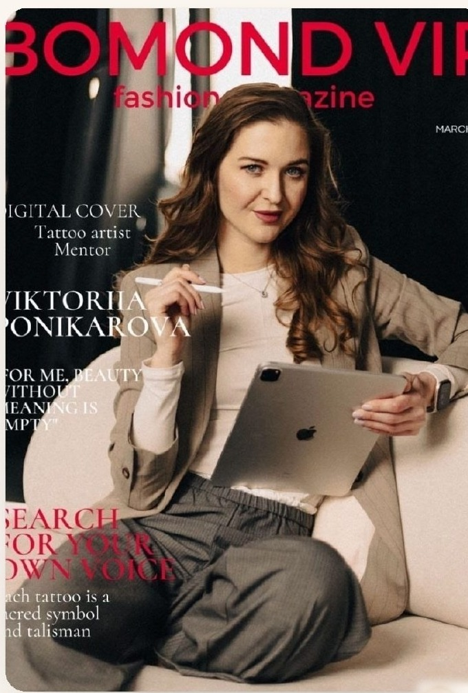
- Meta Ads: геотаргетинг, аудитории, бюджет для старта, креативы
- Google Ads: горячий спрос, стоимость клика, Google Business Profile
- TikTok Ads: контент-стратегия, аутентичность, бюджет для теста
- Лендинг под рекламу: обязательные элементы и мобильная скорость
- Таргетинг и аудитории: look-alike, ретаргетинг, локальный охват
- Аудит рекламного кабинета: структура, геотаргетинг, Quality Score
16/23
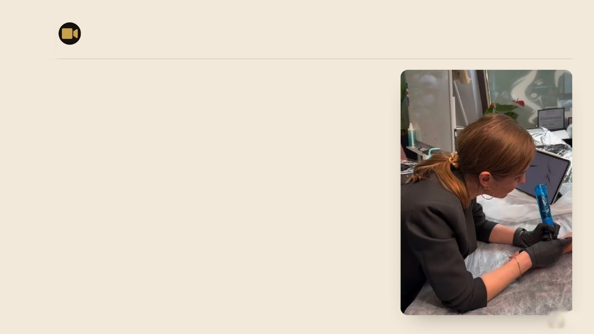
14
Менторские созвоны про бизнес и мышление мастера.
17/23
Zoom - Tattoo
- Как поднять чек на 10-25% без страха потерять клиентов
- Продажи без «впаривания» - коммуникация вместо агрессии
- Путь от мастера к владельцу студии: финансовая модель, наём
- Работа с командой: делегирование, прозрачная система оплаты
- Юридические вопросы: анкета-согласие, страхование, возраст
- Работа с проблемными клиентами и профессиональные границы
- Мышление мастера-предпринимателя: правило 20/80
Zoom - Tattoo
Менторские созвоны про бизнес и мышление мастера.
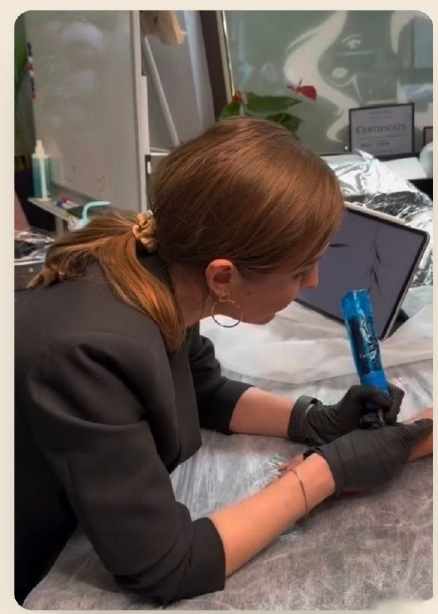
- Как поднять чек на 10-25% без страха потерять клиентов
- Продажи без «впаривания» - коммуникация вместо агрессии
- Путь от мастера к владельцу студии: финансовая модель, наём
- Работа с командой: делегирование, прозрачная система оплаты
- Юридические вопросы: анкета-согласие, страхование, возраст
- Работа с проблемными клиентами и профессиональные границы
- Мышление мастера-предпринимателя: правило 20/80
17/23
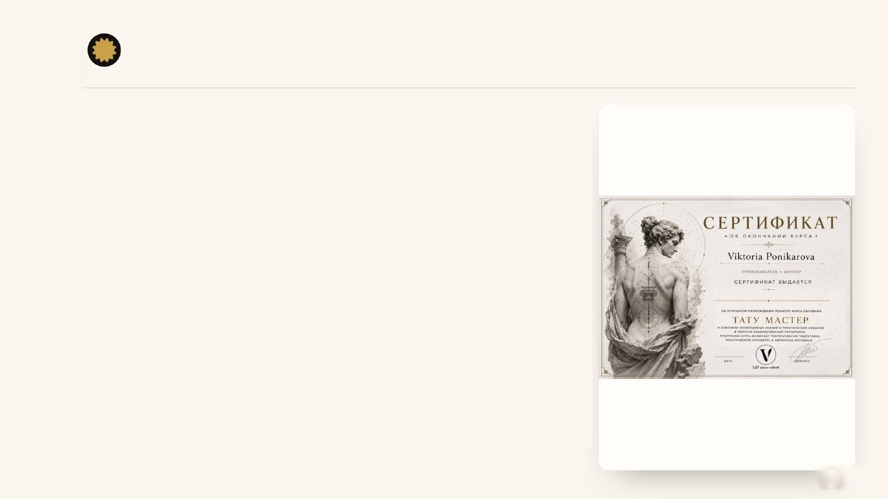
15
Финал пути - официальное подтверждение твоего уровня.
18/23
Именной диплом
- Именной диплом ViP tattoo school, подписанный Викторией лично
- Данные отправляются в личные сообщения, не в общий чат
- Признаётся 12 студиями-партнёрами по Украине и Европе
- Выдаётся на 8+ языках мира
- Подтверждение уровня для портфолио, клиентов и соцсетей
- Скидки на дальнейшие обучения и услуги
- Доступ ко всем материалам курса остаётся навсегда
Именной диплом
Финал пути - официальное подтверждение твоего уровня.
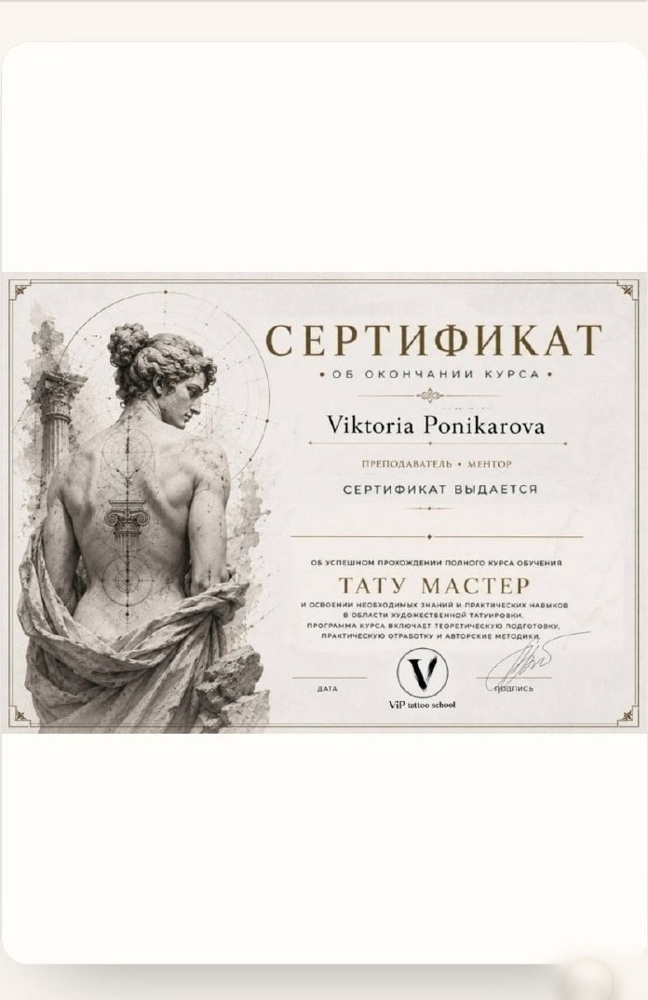
- Именной диплом ViP tattoo school, подписанный Викторией лично
- Данные отправляются в личные сообщения, не в общий чат
- Признаётся 12 студиями-партнёрами по Украине и Европе
- Выдаётся на 8+ языках мира
- Подтверждение уровня для портфолио, клиентов и соцсетей
- Скидки на дальнейшие обучения и услуги
- Доступ ко всем материалам курса остаётся навсегда
18/23
Результат обучения
После прохождения курса ты получишь:
Контроль над своим доходом
Перестанешь зависеть от работодателя и сможешь сам назначать цену своей работе.
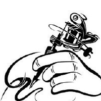
Уверенную технику без дрожи
Разберёшься в машинке, линии и цвете - больше никакого страха испортить рисунок.
Стабильный поток клиентов
Портфолио и шаблоны для Instagram, которые уже приносят заявки ученикам курса.
Признание в индустрии
Сертификат на 8+ языках, признанный в 12 студиях-партнёрах по Украине и Европе.
«Не просто диплом - реальная профессия, которая кормит и приносит уверенность»
19/23
Почему именно это обучение
Чем VIP tattoo school отличается от типичного обучения тату.
VIP tattoo school
- Практика на моделях под личным наблюдением ментора
- Индивидуальный разбор каждой выполненной работы
- Сертификат, признанный студиями-партнёрами
- Пожизненный доступ к записям и обновлениям программы
- Онлайн-связь с куратором и техподдержкой без выходных
Типичное обучение тату
- –Только теория без практики на моделях
- –Группы по 30+ человек без обратной связи
- –Сертификат без признания в индустрии
- –Доступ к материалам только на время курса
- –Отсутствие поддержки после завершения
20/23
Без риска и лишних вопросов.
Честный ответ
Почему такая низкая цена?
Я знаю, что не каждый готов сразу платить за очное обучение в студии от 1200€ и присутствовать лично в студии на обучении. Поэтому сделала онлайн обучение по доступной цене 275€ - чтобы вы могли начать путь в профессии без риска, а дальше уже сами решали, куда расти: в свою мини-студию или в открытие своего дела.
21/23
Честный старт
Гарантия честного старта
Если, пройдя все модули-блоки, ты поймёшь, что курс не твой - вернём оплату в течение 3 дней с момента старта обучения. Без лишних вопросов.
3 дняна честное решение с момента старта
100%возврат средств без объяснений
0€риска попробовать себя в профессии
Честный старт
Без риска и лишних вопросов.
Честный ответ
Почему такая низкая цена?
Я знаю, что не каждый готов сразу платить за очное обучение в студии от 1200€ и присутствовать лично в студии на обучении. Поэтому сделала онлайн обучение по доступной цене 275€ - чтобы вы могли начать путь в профессии без риска, а дальше уже сами решали, куда расти: в свою мини-студию или в открытие своего дела.
Гарантия честного старта
Если, пройдя все модули-блоки, ты поймёшь, что курс не твой - вернём оплату в течение 3 дней с момента старта обучения. Без лишних вопросов.
3 дняна честное решение с момента старта
100%возврат средств без объяснений
0€риска попробовать себя в профессии
21/23
Популярные вопросы
Часто задаваемые вопросы.
22/23
01Нужен ли художественный опыт?
Не обязателен, но приветствуется. В программе есть модуль по отработке линии и композиции с нуля.
02Сколько стоит оборудование?
Базовый набор для практики на искусственной коже - от 60-80€. Список моделей есть в бонусном уроке.
03Гарантированы ли первые клиенты?
Даём систему и шаблоны, которые уже сработали у учеников, но результат зависит от твоей практики.
04Сколько времени уделять обучению?
В среднем 5-7 часов в неделю на протяжении 8 недель, включая уроки и практику.
05Есть ли возрастные ограничения?
Обучение доступно с 18 лет - стандартное требование для работы в тату-индустрии.
06Нужен ли ноутбук для обучения?
Достаточно смартфона - всё проходит через Telegram, удобно смотреть уроки и сдавать задания.
Популярные вопросы
Часто задаваемые вопросы.
01Нужен ли художественный опыт?
Не обязателен, но приветствуется. В программе есть модуль по отработке линии и композиции с нуля.
02Сколько стоит оборудование?
Базовый набор для практики на искусственной коже - от 60-80€. Список моделей есть в бонусном уроке.
03Гарантированы ли первые клиенты?
Даём систему и шаблоны, которые уже сработали у учеников, но результат зависит от твоей практики.
04Сколько времени уделять обучению?
В среднем 5-7 часов в неделю на протяжении 8 недель, включая уроки и практику.
05Есть ли возрастные ограничения?
Обучение доступно с 18 лет - стандартное требование для работы в тату-индустрии.
06Нужен ли ноутбук для обучения?
Достаточно смартфона - всё проходит через Telegram, удобно смотреть уроки и сдавать задания.
22/23


VIP tattoo school
Почему именно это обучение
Чем VIP tattoo school отличается от типичного обучения
- Практика на моделях под личным наблюдением ментора
- Индивидуальный разбор каждой выполненной работы
- Сертификат, признанный 12 студиями-партнёрами
- Пожизненный доступ к записям и обновлениям
- Онлайн-связь с куратором без выходных
Готов начать путь в тату-индустрии?
Доступ остаётся с тобой навсегда - можешь возвращаться к любому блоку в любой момент. Напиши мне лично, и я расскажу, как начать обучение уже сегодня.
ViP tattoo school · Виктория Поникарова
VIP tattoo school
Почему именно это обучение
Чем VIP tattoo school отличается от типичного обучения
- Практика на моделях под личным наблюдением ментора
- Индивидуальный разбор каждой выполненной работы
- Сертификат, признанный 12 студиями-партнёрами
- Пожизненный доступ к записям и обновлениям
- Онлайн-связь с куратором без выходных
Забрать курс со скидкой за 600€ 275€

Готов начать путь в тату-индустрии?
Доступ остаётся с тобой навсегда - можешь возвращаться к любому блоку в любой момент. Напиши мне лично, и я расскажу, как начать обучение уже сегодня.
ViP tattoo school · Виктория Поникарова